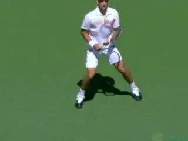

Novak Djokovic's Forehand: Start of the Preparation¶
John Yandell¶

The unit turn: a commonality shared by all good players at all levels.
In the first article in this series ([]), we saw the surprising combination of components in one of the most effective weapons in pro tennis, Novak Djokovic's forehand.
We described his surprisingly extreme grip and its unlikely combination with his preferred court position, close to the baseline where he takes the ball early. We saw that in this way Novak had synthesized seemingly contradictory elements from the games of Rafael Nadal and Roger Federer.
But we also noted that in other ways his motion was very different from either of these other two great players, and that Djokovic has his own unique blend of technical components. Now in this article let's go through and look at those components in detail, starting with the beginning of the preparation, or the Unit Turn. In future articles we'll trace the completion of the preparation, the backswing, the use of the legs and stances, and the set up of the body and hitting arm for the forward swing.
Unit Turn
Despite the diversity in the swing patterns of top players described in the first article there is one element that is very similar from top player to top player. This is the way they start the preparation. And it's the same for Djokovic.

What is the role of the feet in initiating the unit turn?
[The first move on the forehand is a Unit Turn[. This move starts the body turning sideways with the torso and the feet. It's a fundamental players at any level can and should incorporate, at least if they want to have sound technical forehands.]] The Unit Turn is a very simple motion to master and can make a monumental difference in your level of play.
So let's look at it in detail. And especially let's take a close look at the role of the feet in the unit turn, something we haven't looked at in so much detail in previous forehand articles.
There are a lot of possibilities because the top pros use many different footwork patterns, some simple, some quite complex. Their choices appear to depend partially on the situation, but also partially at least on personal preference.
Let's sort through the confusion about this, see what the range of options are, talk about whether they should all be consciously trained, and then come back to the simplest way for players at all levels to master the role of feet as well as the entire unit turn.
The Time Factor
The unit turn is actually one of the simplest moves to master in the whole game if you know what to do when. But to me it is shocking how terrible the preparation is if you watch much club tennis. Player after player waits until the ball has reached his or her side of the court--or even actually bounced--before they even react.

It's one second between explosions.
By then it is far too late to execute the components in a sound technical swing. The pros on the other hand react virtually instantaneously. They start the preparation at the moment they recognize the oncoming ball.
In pro tennis there is about one second between the hits. The ball explodes off Djokovic's racket. Then one second later it is exploding off the opponent's racket coming back the other way. Moving 10 feet back behind the baseline buys time, but only a few fractions of the overall interval.
Watch in the Stroke Archive. On virtually every forehand you will see a split step and an immediate turn. This is how all players should start. Focusing on the ball coming off the opponent's racket and then immediately starting the motion.
In club tennis the interval is longer obviously than in pro tennis, but is still less than two seconds. In high level NTRP play, it can be close to the pro interval. I've timed it at as little as one and one tenth seconds over fast exchanges for 5.0 California tournament players.
This is why the entire sequence of movement depends on the execution of the unit turn. Incorporate it for yourself and it could change your life.

Checkpoints: Hips and shoulders turned 45 degrees and aligned. Arm and racket in front of torso.
The other common mistake at the club level, besides starting too slowly is to equate preparation with "getting the racket back." This isn't how a good forehand starts.
Preparation doesn't start with the racket. If your first thought is get your racket back early, it is highly likely that your first motion will be with your arm, moving it back independently from the rest of your body. And if you do this, it is virtually certain you will never fully turn and position yourself correctly to develop power or consistency.
So again, sound preparation begins with a turn that rotates the entire body partially sideways, and this turn is completed predominantly through the movement of the feet and the torso and with little or no independent motion of the arms.
As the unit turn starts the arms and racket stay relatively stationary in front of the torso. Then as the body turns, they naturally turn sideways with the rest of the body. So the racket moves, yes, but just not independently. They move as a function of the turn.
The checkpoints for the unit turn are simple. The torso turns about 45 degrees to the net. Because the body turns as a unit, the hips and shoulders are turned roughly the same amount and are aligned at this same angle.

[The unit turn can start with a wide array of footwork patterns.]
Both hands stay on the racket. The players may turn the racket face angle or raise the elbow or hands slightly, but the hands stay together, don't separate and don't go back outside the plane of the torso.
Footwork and the Unit Turn
The feet play a critical role in the unit turn, but there is a lot of confusion and debate about the exact pattern of the steps. Should the player begin the turn with a pivot step? Or should he pick up the right foot and step out in the direction of the shot?
Or is it faster and more efficient to take a "drop step" and actually step backwards and underneath the body in the opposite direction the player intends to move? Or should the player take a step up with the left foot and/or a step away from the ball toward the back fence?
The answer is yes to all of these questions. Along with multiple additional possible answers. Players can take reverse pivot steps. These can be combined with cross over or reverse cross over steps. They take side steps or shuffle steps. And they combine all these in different ways at different times.

Watch the step combinations on this inside ball.
It can be very complex. For example, look at the animation of Novak preparing to hit an inside out forehand. The footwork begins with a drop step with the left foot. Then a crossover step with the right. This is followed by a shuffle step. All this happens in the time it takes the torso to turn 45 degrees.
There other complex combinations as well. In fact if you start to go through the High Speed Archives you will see them in all directions, with players moving sideways across the baseline, moving straight upward or straight backward, moving upward and backward on diagonals, and moving a variety of distances and directions to get around the ball to hit inside out or inside in.
Even the simpler versions can be more complex than they might appear. For example, sometimes players combine the split step with initiation of the turn, a fact first noticed by Nick Saviano studying our original high speed footage from the 1997 U.S. Open. As players are in the air just prior to landing the split step they can turn the outside foot in the direction of the shot, so the unit turn is actually partially underway in the air before both feet hit the court.

Sometimes the player begins the turn with the right foot before landing the split step.
There are probably even more possibilities I haven't noticed or comprehended. It's all there is the footage in the High Speed Archive, if you want to investigate it all for yourself.
Our contributor David Bailey has also analyzed the variety of first steps as part of his work on the range of footwork patterns in the pro game. And no doubt many of the options mentioned here can be specifically trained, as he articles show so brilliantly. ([] to see his articles in the footwork session).
My own opinion though is that for some players at least the feeling of simply turning the feet and the body sideways is enough. When the player focuses on this, the right first step will often occur naturally.
In some cases, there are two or more viable options, and some players will be more comfortable with one or the other. But you don't necessarily need to train all the steps in the complex variations.
My personal opinion is that for the sake of teaching the basic unit turn, a simple step out with the right or outside foot is probably the best to try first. This means as the body starts to turn, the player picks up the right foot and steps to his right with the toes facing toward the sideline. (I still love one of our original articles by Bob Hansen that demonstrates this, [].)

Is the drop step faster especially on wide balls?
[It's sometimes argued that players can start faster if they drop the outside foot underneath the body--what Jim McClennan first branded a "gravity" step.] And a lot of players do take gravity steps, although usually when they have significant distances to travel and are under time pressure.
But Djokovic, recognized as one of the best movers, doesn't do this on most balls, or even most running balls. [Instead, he tends to take pivot steps, simply swiveling his right foot in the direction he is moving, a step pattern that is often associated with covering less distance, not more.]
So in my view, the point isn't to blindly take a certain type of step. Sometimes a coach can show a player a simple step out and watch them naturally default into a pivot step, or even a drop step.
To me that is not a problem as long as players are turning and starting the movement to the ball. The main point is to execute the unit turn, and find the steps that are natural for a given situation.

Sometimes Djokovic starts running forehands with a pivot step.
If a player is athletic and has played sports like soccer or basketball, he is even more likely to find the right range of possible steps on his own. Or sometimes not. The time to intervene and correct the pattern of footwork is when a player has trouble with the preparation on a specific ball.
A common example would be when a player is slow getting turned when moving around the ball to hit inside out or inside in. ([] to read David Bailey's analysis of this pattern.) Then he may want to learn to imitate a very specific basic pattern, for example, turning while taking reverse steps away from the ball.
The Left Side
The biggest problem I see players have with the unit turn is not which first step they take. Rather it's the tendency to not turn the torso far enough, and especially not to turn enough with the left side.
Usually this is because the left hip and the left leg and foot get stuck and just don't rotate with the rest of the body. The right foot and the shoulders get partially turned but the hips and left leg stay facing too much toward the net.

Intervention is a good idea if players struggle moving to hit inside.
Remember the concept is a unit turn, and the idea is that the whole body rotates. A great visual image is that the body - the torso and both the legs--are a metal cylinder. There are no joints or moving parts. In the unit turn, the entire cylinder has to rotate as one single piece.
For this to happen, the left hip and the left foot need to come up and forward. As the cylinder rotates, the player should end up with the left foot in front of or closer to the net than the right foot, and the player should also be up on the left foot toes.
Watch how beautifully Djokovic completes this motion in the last animation of a basic step out. Both shoulders, both hips, and both legs turn together. Note the alignment of the hips and shoulder and how the rear leg and foot have come up and around.
But the result is basically the same end regardless of what type of first step he is actually taking. The unit turn is prerequisite for everything else that happens in the forehand.

Watch the left hip and the left leg rotate upward and forward as the "cylinder" turns.

John Yandell is widely acknowledged as one of the leading videographers and students of the modern game of professional tennis. His high speed filming for Advanced Tennis and TPA have provided new visual resources that have changed the way the game is studied and understood by both players and coaches. He has done personal video analysis for hundreds of high level competitive players, including Justine Henin-Hardenne, Taylor Dent and John McEnroe, among others.
In addition to his role as Editor of TPA he is the author of the critically acclaimed book Visual Tennis. The John Yandell Tennis School is located in San Francisco, California.
← A New Synthesis | Advanced Tennis Index | The Full Turn and Backswing →